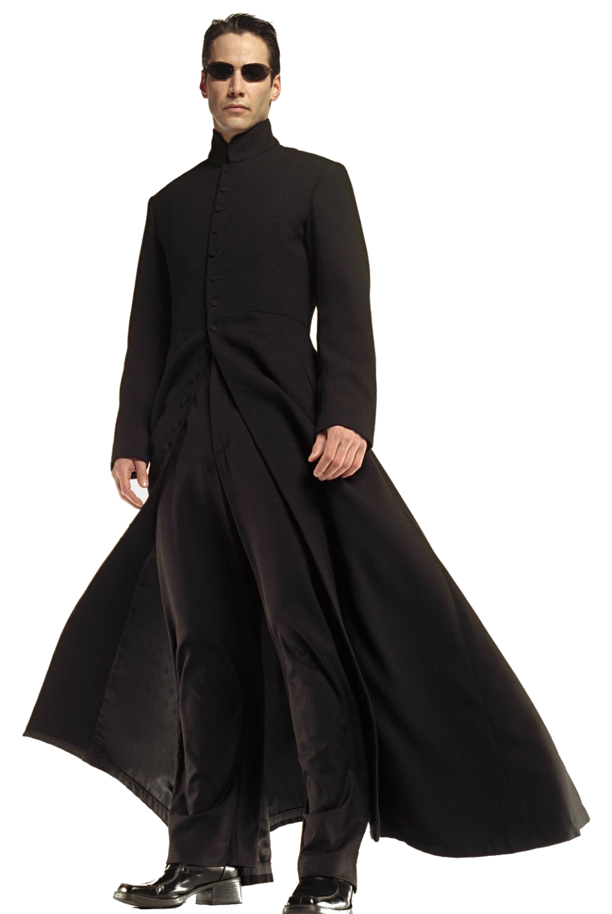
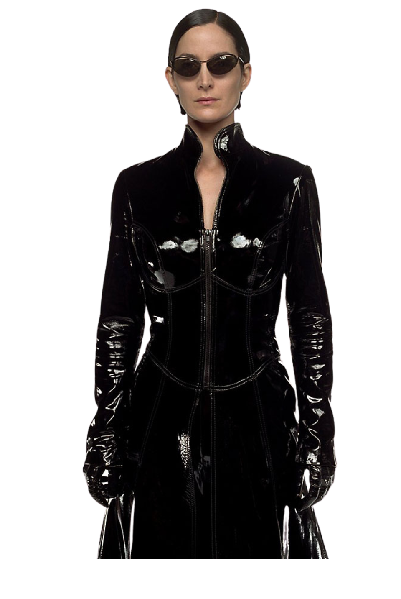
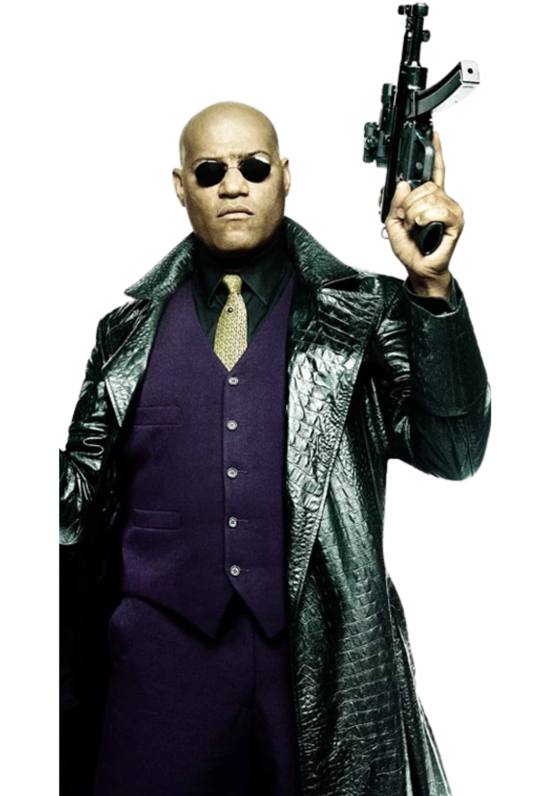
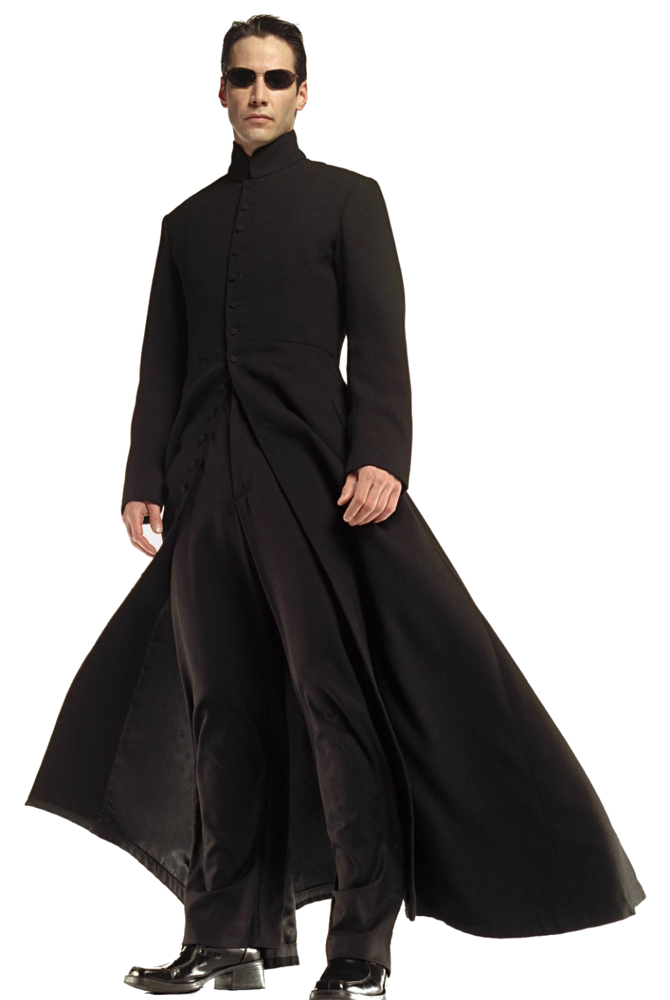
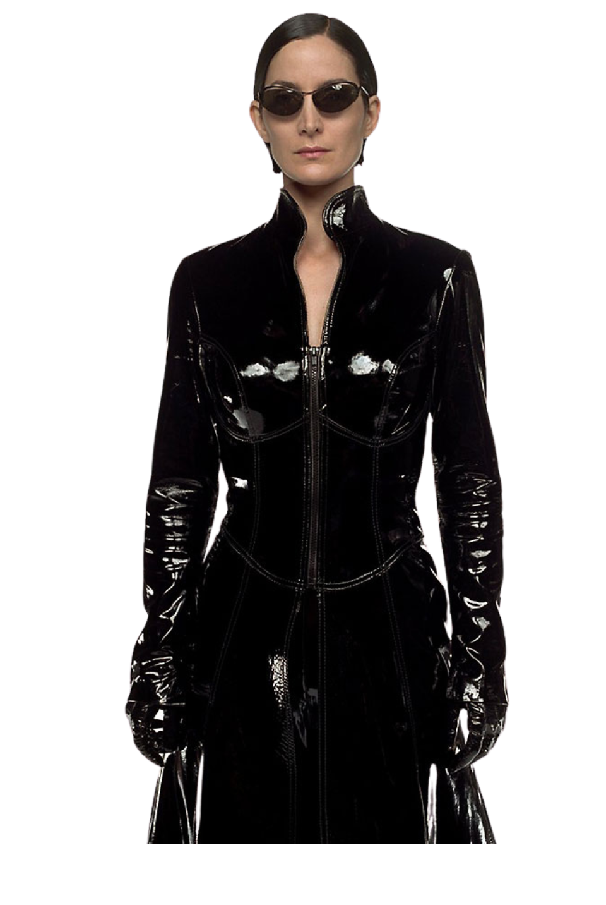
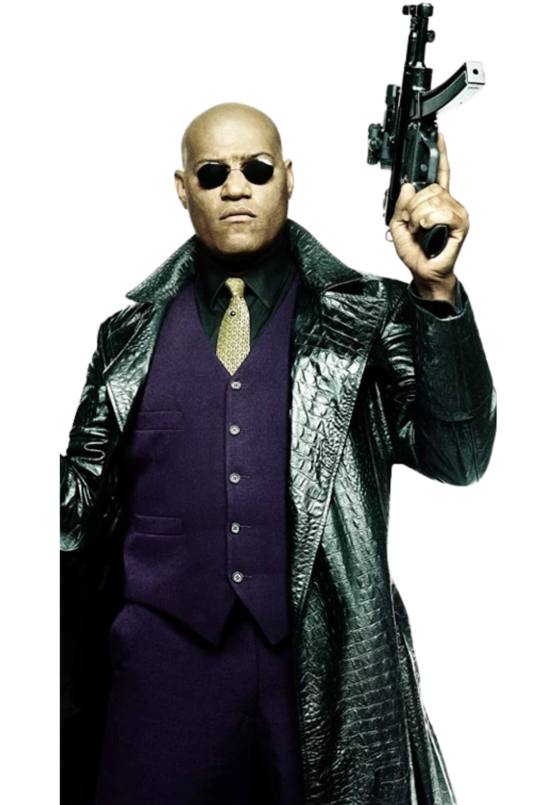

Elenco Principal

Keanu Reeves
Neo

Carrie-Anne Moss
Trinity

Laurence Fishburne
Morpheus

Hugo Weaving
Agente Smith
$ wake up, Neo...
$ the Matrix has you...
$ follow the white rabbit.
Escolha sua pílula:
"Ignorance is bliss." – Cypher
Neo

Trinity

Morpheus

Agente Smith
Matrix é uma simulação criada por máquinas para controlar a mente dos humanos. Dentro dela, os seres humanos vivem uma realidade ilusória enquanto seus corpos reais são usados como fonte de energia. O filme mistura filosofia, ação e ficção científica, levantando questionamentos sobre liberdade, identidade e a natureza da realidade.